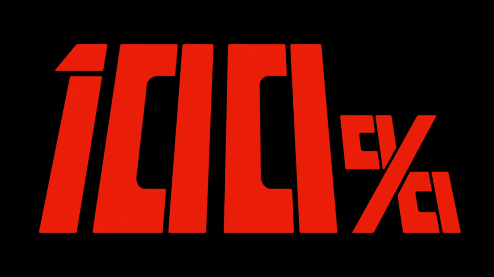
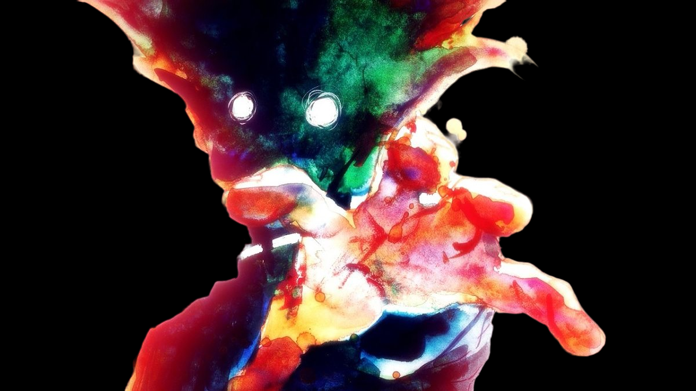
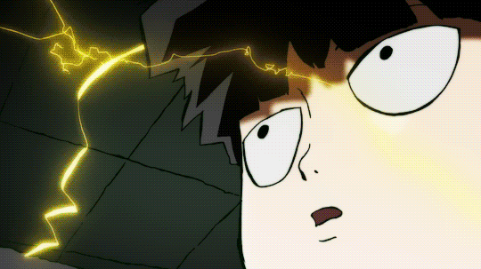

MOB PSYCHO
Um anime sobre evoluir
 Mob Psycho 100: Ocultando Poderes, Revelando Emoções
"Mob Psycho 100" é uma série de anime e mangá criada por ONE. A história segue Shigeo Kageyama, também conhecido como "Mob", um estudante do ensino médio com poderes psíquicos extraordinários. No entanto, ele prefere manter suas habilidades em segredo para levar uma vida normal. Mob trabalha como assistente de um exorcista charlatão chamado Arataka Reigen, que usa os poderes de Mob para ganhar dinheiro. A trama se desenrola com Mob aprendendo a lidar com suas emoções e poderes, enquanto enfrenta várias ameaças sobrenaturais e desafios emocionais. A história aborda temas como autoaceitação, amadurecimento e a complexidade das emoções humanas.
- Mob Psycho 100 é criado por ONE, que também é o autor da webcomic que inspirou "One Punch Man". Ambas as séries compartilham um estilo de comédia único e são apreciadas por fãs em todo o mundo.
- Além do protagonista, a série dedica tempo para desenvolver personagens secundários de uma forma que muitas outras séries de anime não fazem. Cada personagem tem sua própria história e arco de desenvolvimento, o que enriquece o universo da série.
- A animação é notável por seu estilo inovador e experimental. As cenas de ação são frequentemente acompanhadas por animações psicodélicas e visuais criativos, o que contribui para uma experiência visual única.